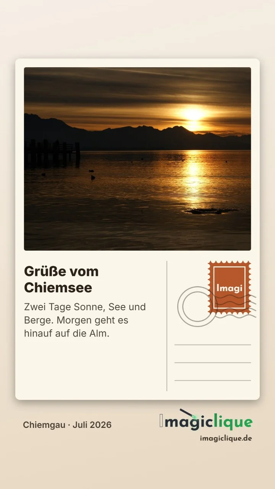
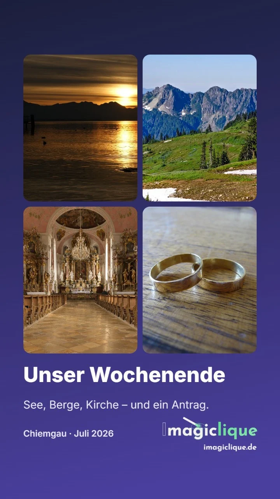
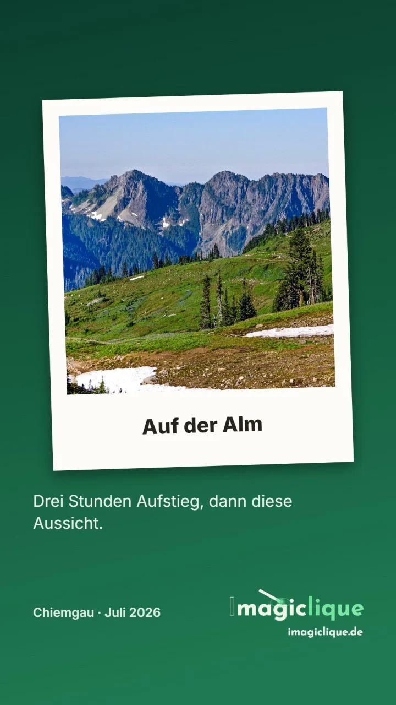
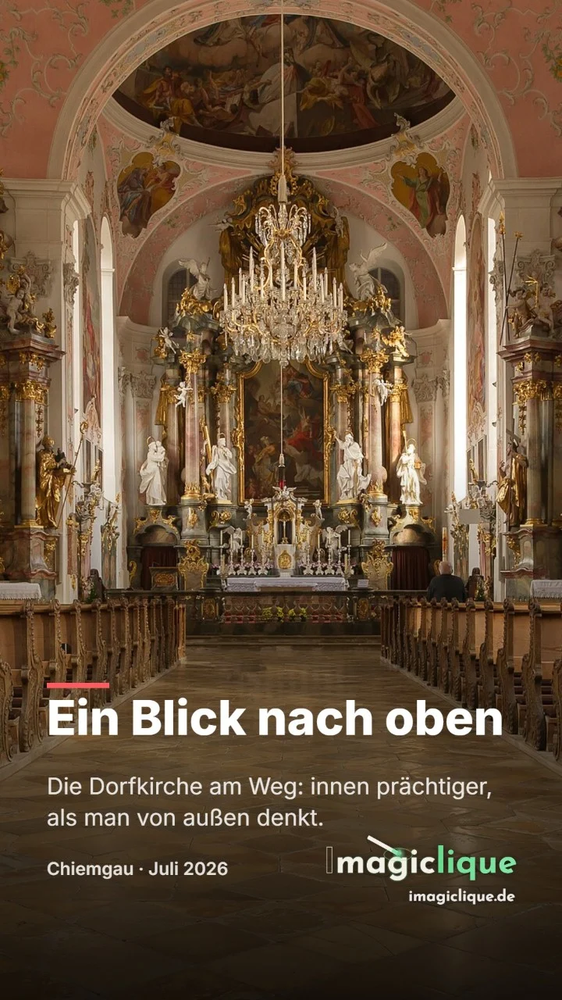
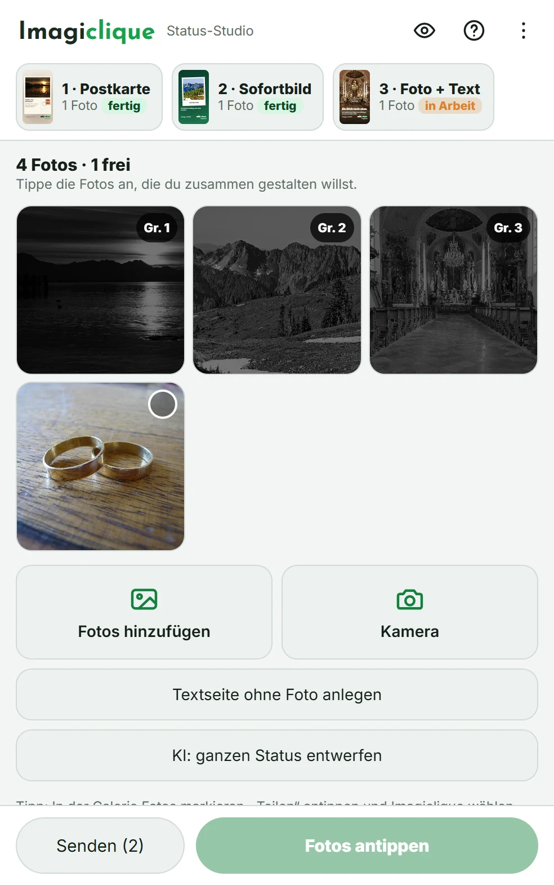
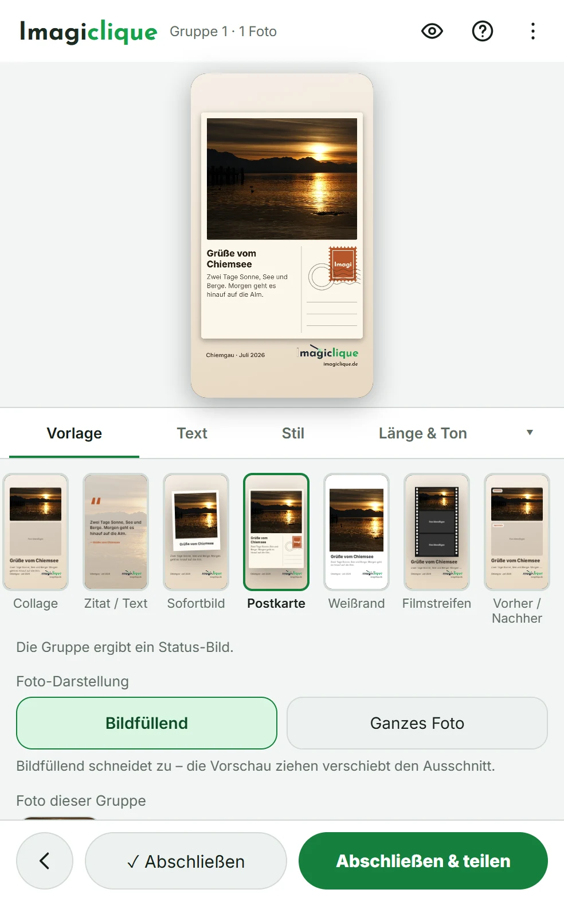
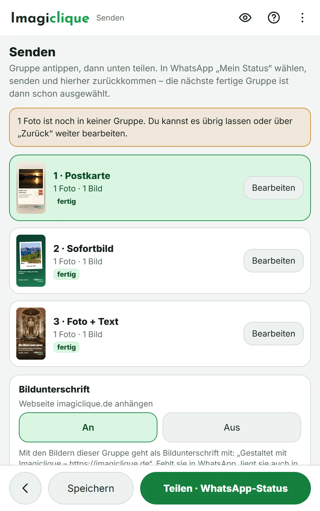

Sieht sofort gut aus
Zehn Vorlagen, dazu Farbstile und Schriften zur Wahl. Du tippst eine Vorlage an und siehst gleich, wie dein Status damit aussieht, mit deinen eigenen Fotos.
Status-Bilder für WhatsApp
Imagiclique macht aus deinen Fotos und ein paar Worten Status-Bilder, die auffallen: als Postkarte, Collage, Sofortbild oder Diashow mit Musik. Direkt auf dem Handy, in wenigen Schritten.



Warum Imagiclique
Im Status zählt der erste Blick. Imagiclique nimmt dir das Gestalten ab: Du wählst Fotos und schreibst ein paar Worte, die App macht daraus Bilder, die zusammenpassen.
Zehn Vorlagen, dazu Farbstile und Schriften zur Wahl. Du tippst eine Vorlage an und siehst gleich, wie dein Status damit aussieht, mit deinen eigenen Fotos.
WhatsApp legt oben und unten eigene Bedienelemente über den Status. Imagiclique hält diese Zonen frei, damit Titel und Text immer lesbar bleiben.
Erst eine Postkarte, dann eine Collage, zum Schluss eine Diashow: Du fasst Fotos zu Gruppen zusammen, gestaltest jede für sich und sendest sie der Reihe nach.
„Teilen“ öffnet das Teilen-Menü deines Handys. Du wählst WhatsApp und „Mein Status“, fertig. Es muss nichts gespeichert, gesucht oder zugeschnitten werden.
So sieht es aus
Dieselben Fotos, jedes Mal anders erzählt. Alle Bilder unten stammen unverändert aus der App.




Die Beispielfotos sind frei lizenzierte Aufnahmen aus Wikimedia Commons, siehe Bildnachweis.
Funktionen
Vom Zuschneiden der Fotos bis zur Diashow mit Musik: Alles entsteht in der App, ohne ein zweites Programm.
Foto + Text, Bericht, Collage, Zitat, Sofortbild, Postkarte, Weißrand, Filmstreifen, Vorher / Nachher und Diashow. Jede Vorlage zeigt sich vorab als kleines Bild mit deinen Fotos.
Aus mehreren Fotos wird ein Video mit sanften Übergängen. Dazu deine eigene Musik oder eine Sprachaufnahme.
Drehen, zuschneiden, aufhellen, Farben kräftiger machen oder einen Filter wählen – direkt in der App. Dein Foto bleibt dabei erhalten: Ein Tipp stellt es wieder her.
Ist dein Text zu lang für ein Bild, verteilt ihn die App satzweise auf die nächsten. Wer nicht tippen mag, diktiert.
Auf Knopfdruck holt die App ein paar Sätze aus Wikipedia zum Aufnahmeort oder zu einem Suchbegriff. Du übernimmst, was passt.
Die App schreibt dir eine fertige Frage für die KI deiner Wahl. Du fügst die Antwort ein und übernimmst nur, was dir gefällt. Die App selbst schickt nichts an eine KI.
Fotos, Texte und Einstellungen bleiben auf dem Handy gespeichert. Nach dem Schließen machst du an derselben Stelle weiter.
Stile
Ein Stil bringt Farben, Schrift und kleinen Schmuck wie Schneeflocken oder Konfetti mit. Tippe auf dem Handy einen Stil an: Er öffnet sich in der App und steht dort im Thema „Stil“ bereit. Über „Eigenen Stil gestalten“ legst du in der App auch eigene Stile an und gibst sie als Link an Freunde weiter.
So geht’s
Aus der Galerie, mit der Kamera oder über „Teilen“ direkt aus deiner Foto-App. Bis zu 30 Fotos auf einmal.
Tippe an, was zusammengehört. Dann Vorlage wählen, Titel und Text schreiben, Farbe und Schrift bestimmen. Die Vorschau zeigt jede Änderung sofort.
„Teilen“ antippen, WhatsApp und „Mein Status“ wählen, senden. Zurück in der App ist die nächste Gruppe schon ausgewählt.
Datenschutz
Imagiclique ist kein Online-Dienst. Die Bilder entstehen auf deinem Handy, und du entscheidest, wann sie es verlassen. Die Einzelheiten stehen im Datenschutzhinweis zur App.
Am besten nimmst du die Android-App. Sie liest den Aufnahmeort deiner Fotos und teilt auch lange Videos. Im Play Store gibt es sie noch nicht: Du lädst sie als Datei von dieser Seite und installierst sie selbst.
Ohne Datei geht es auch als Web-App in Chrome: „Web-App öffnen“ antippen, dann im Menü ⋮ „App installieren“ wählen. Sie aktualisiert sich von selbst, kann den Aufnahmeort der Fotos aber nicht lesen.
App und Web-App werden über GitHub Pages ausgeliefert. Was sie mit Daten machen: Datenschutz in der App, Android-App.
Fragen
Nein. Du öffnest die App und legst los. Es gibt keine Anmeldung und kein Benutzerkonto.
Nein. Die Bilder entstehen auf deinem Handy. Sie verlassen es erst, wenn du selbst auf „Teilen“ tippst und sie an WhatsApp gibst.
Entwickelt und getestet ist die App auf Android-Handys mit Chrome. Auf dem iPhone ist sie bisher nicht getestet.
Der kleine Schriftzug unten rechts ist die Werbung für die App. Wenn du an sieben verschiedenen Tagen einen Status geteilt oder gespeichert hast, kannst du ihn ausblenden.
Ja. In der App wählst du als Ziel WhatsApp oder Instagram. Für Instagram hält die App unten mehr Rand frei und teilt Videos nach 60 Sekunden. Das gilt genauso für Storys bei Facebook.
Noch nicht. Du lädst die Android-App als Datei von dieser Seite und installierst sie selbst. Oder du nimmst die Web-App und installierst sie aus Chrome auf den Startbildschirm.
Die App kommt nicht aus dem Play Store, sondern als Datei von dieser Seite. Android fragt deshalb einmal, ob der Browser Apps installieren darf, und Play Protect kann zusätzlich nachfragen.